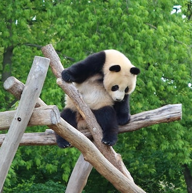

Today's Animal of the Day: Giant Panda

Giant pandas are herbivores, and their diet consists almost exclusively of bamboo.
When baby giant pandas are born, they are only about seven inches long, and only 1/900th of the weight of an adult giant panda.

Despite their chubby body shape, giant pandas love to climb trees and other structures.

Giant pandas spend most of their time eating, so they only nap for two to four hours at a time.